漫画版
第八話「黒い紙の継ぎ目」
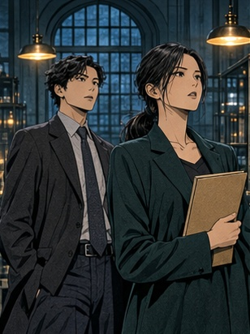
翌日・鑑識室
瀬尾さん、封の写真を二件ぶん持ってきました。
鑑識スタッフが作業灯を引き寄せ、机の中央を照らした。
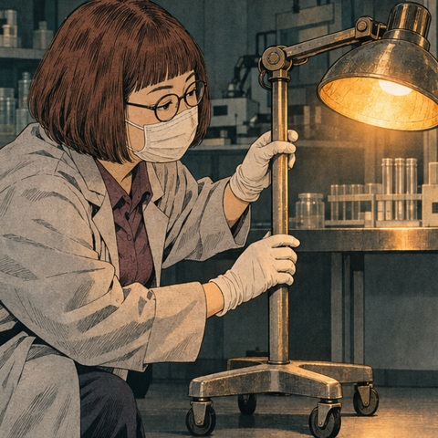
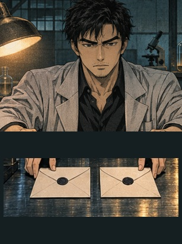
野鳥園と舞踏会の屋敷。どちらも、封に黒い紙が貼ってある。
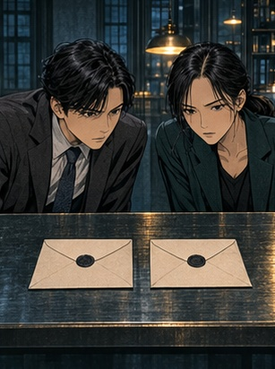
角が斜めに切れてます。ここを合わせたら、一枚になるんじゃ？
1 / 4
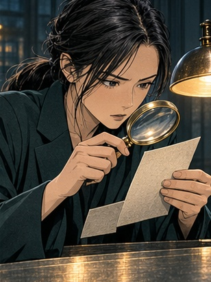
切り口を合わせても、傷の線がずれる。間に何か入るのかも。
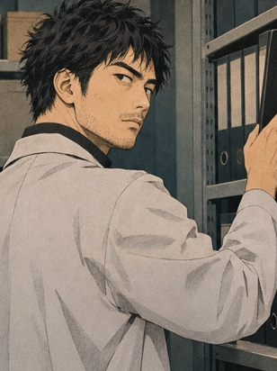
黒い紙なら、停電した屋敷の宝石盗難でも見た。あの封の記録を出そう。

別件・宝石盗難の夜
2 / 4
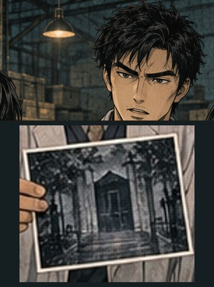
そのときの封だ。こっちにも細い傷がある。
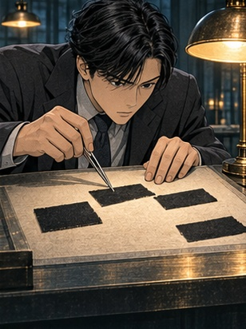
三枚目を端に置くと、傷がそこで途切れます。
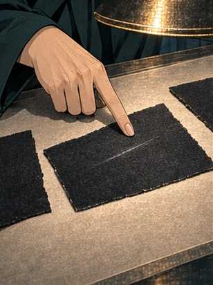
端で傷が途切れるなら、間に続きがある。野鳥園と舞踏会の間に入れてみて。
3 / 4
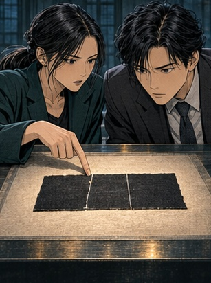
真ん中なら、左右の切り口がぴたりと合う……。
朝倉の指が止まった。三枚目を間へ滑り込ませたところだった。
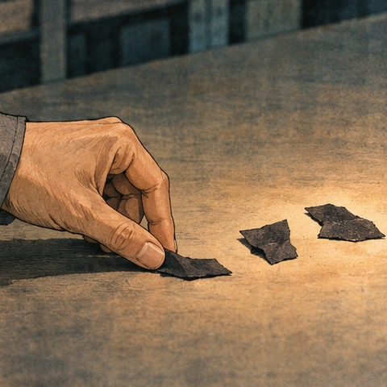
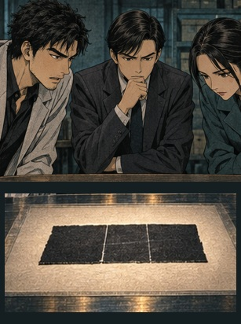
切り口がはまって、傷も一本につながった。もとは一枚の紙ね。
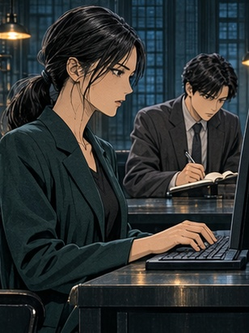
水城が照合写真を送ると、担当の一人から返事が来た。
別の日付なのに、同じに見える写真があるそうです。こっちも見てほしいと。
4 / 4